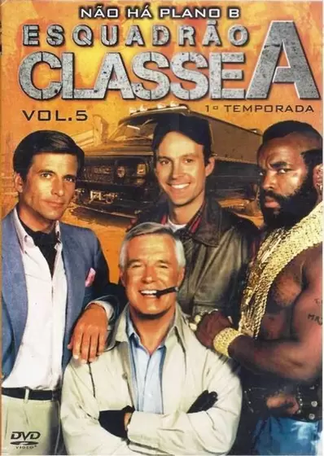
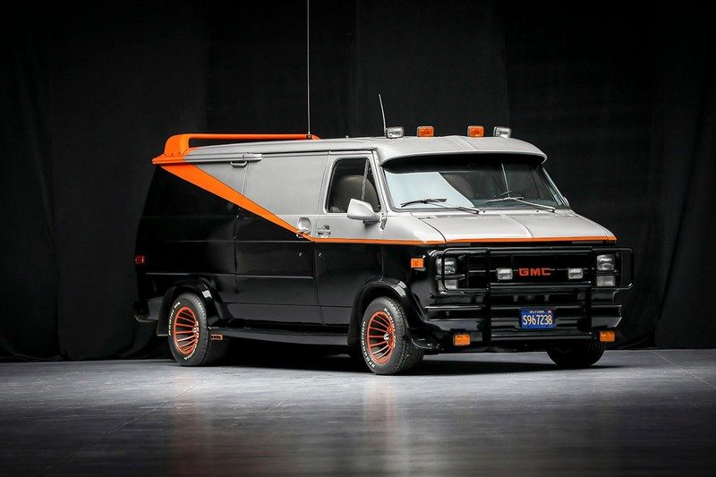
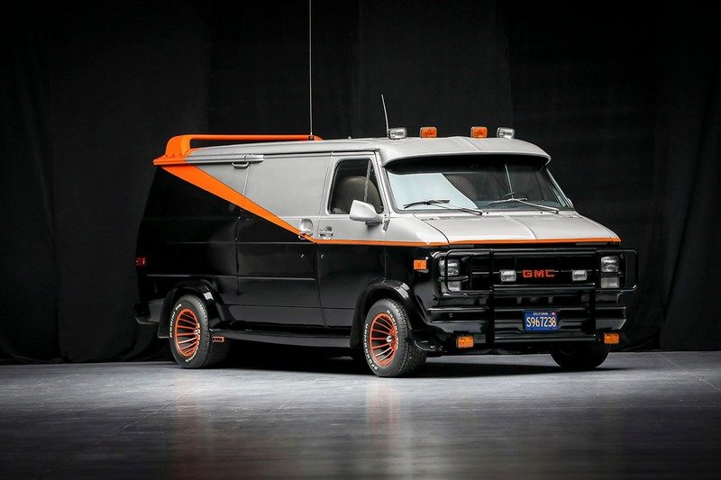

ESQUADRAO CLASSE A
- Um dos chamarizes desse programa que emplacou fortemente com as crianças da época era a presença do truculento Mr. T e seu indefectível corte de cabelo moicano. Saído do universo das lutas livres (Wrestling), tendo trabalhado como guarda-costas e leão de chácara, o grandalhão se tornaria uma das personalidades mais curiosas e famosas da década. Sempre utilizando de seu bordão “fool”, chamando todos de tolo, ela acabava de sair do sucesso Rocky III – O Desafio Supremo (1982), onde interpretou o antagonista Clubber Lang. Aqui, ao contrário ele era o herói, o brucutu B.A. (Bad Attitude) Baracus. Criado por Stephen J. Cannell (Super-herói Americano) e Frank Lupo (Tiro Certo), o seriado apresentava quatro veteranos da guerra do Vietnã, acusados de um crime que não cometeram. Assim, eles decidem agir por debaixo dos panos como mercenários, protegendo inocentes enquanto fogem dos militares.
- O que chamava atenção aqui verdadeiramente era a química de quatro personagens bem diferentes membros deste Esquadrão: John ‘Hannibal’ Smith (George Peppard, de Bonequinha de Luxo) era o líder, o experiente veterano; Templeton ‘Faceman’ Peck (Dirk Benedict) – ou Cara de Pau, como diz o nome no Brasil, era o mulherengo que usava seu charme como arma; ‘Howling Mad’ Murdock (Dwight Schultz) – Louco Furioso no Brasil -, era o piloto de aviões e helicópteros da equipe, e o desequilibrado de plantão, também o alívio cômico. Com B.A. (Mr. T) eles formavam o quarteto de renegados. O programa ficou no ar por 5 Temporadas, de 1983 a 1987. Esta foi outra série que rendeu um filme para o cinema. Em 2010, Liam Neeson, Bradley Cooper, Sharlto Copley e Rampage Jackson foram as novas caras dos personagens numa superprodução.
- * Temporadas: 5
- * Exebição: 1983 a 1987
- * Episódios: 97

 

Desenvolvido por Raphael Souza Alexandre ©